Sculpture · Making something in the likeness of something
In the Likeness: carve a statue from a block of marble
A likeness is anything made to be recognised as something else: a person, an animal, a hand, a machine. Choose what yours will be, find it inside the block, and take away everything that isn't it.
“The best of artists has no concept that a single block of marble does not already contain within its excess.”
Michelangelo, from a sonnet written in the 1530s or 1540s (translated)
Michelangelo left this figure unfinished. You can see exactly how he worked: in from the front, roughing with the point and claw, the body appearing while the head is still buried in stone. Galleria dell'Accademia, Florence. Photo: Jörg Bittner Unna, CC BY-SA 3.0.
This quarter
Three traits, and likeness is one of them
This quarter every student shows three traits: something that moves while all its printed pieces stay together, something that is a useful tool, and something made in the likeness of something else. One object can carry all three, or you can spread them over two or three prints. This lesson is about the third trait. A likeness can also move or do a job: an owl pencil cup, a fish whose body flexes, a turtle whose shell hinges open.
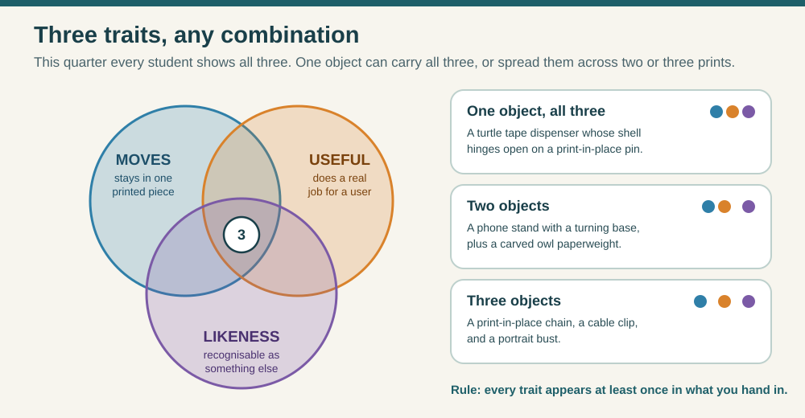
Every trait has to appear at least once in what you hand in. Fewer objects means each one has to do more. Original ClassroomOS diagram.
A 3D printer builds a form up, one layer at a time. A carver works the other way: the form is already somewhere inside the block, and the work is subtractive, removing everything that is not the statue. Every cut is permanent. You can't glue marble back on and expect it to look right, which is why carvers plan with a maquette first.
Process
Material
How the form is made
A mistake means…
Carving (subtractive)
Stone, wood, foam
Remove material from a solid block
Rethinking the design around the missing stone
Modelling (additive)
Clay, wax
Push and add material by hand
Add more clay and try again
3D printing (additive)
Plastic filament, resin
A machine adds thin layers
Edit the file, print again
CNC and robot carving (subtractive)
Stone, wood, metal
A machine cuts toward a 3D model
The machine only cuts where the model says
Marble Studio
Find the figure in the block
This is a 40 × 56 × 36 cm block of marble, about 218 kg, on a sculptor's turntable stand (a banker). Carve it with the six tools real carvers use, in the order they use them. The studio counts every strike, every kilogram removed, and every piece that breaks off.
Choose a subjectPick a maquette, draw your own front and side views on the block, or load an STL you designed in Workbench, Tinkercad or Blender.
See it insideTurn on Ghost to see the figure in the stone, Points for the pointing machine, and Guide colours to show how much is left.
Rough out, then refinePoint chisel first, then claw, then flat. Strike toward the mass of the block: a blow toward a thin edge snaps it off.
Smooth and polishRasp away the chisel marks, then polish. Polish won't take until the rasp has been over the stone.
Test the likenessSilhouette view, turn the banker with ⟲ ⟳, and check it under Raking light.
Keep itPhotograph it, save the file, or download an STL to print.
Drag to carve; right-drag (or Look mode, or two fingers) to walk around the banker. Autopilot runs any step the way a workshop would, and you can take the chisel back at any moment. Turn on Stone rules to carve with no undo, like real marble.
Teacher demo, 3 minutes.
Choose Maquette: Seated cat, turn on Points and Ghost, set Speed to 10× and press Autopilot every step. Pause after the rough-out and ask: what is still clearly not the cat? Then press New block and let students carve their own. Students without a design can use a maquette; students with a design should draw it or load their STL.
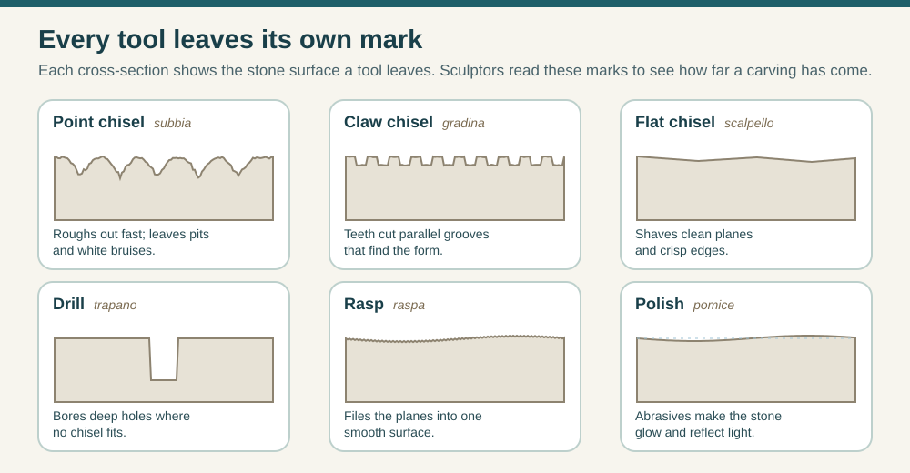
Look closely at the studio's stone and you'll see each tool's mark: pits, then grooves, then facets, then a smooth skin. Under raking light the marks show which tool touched the stone last. Original ClassroomOS diagram.
Measuring, not guessing
The pointing machine: the sculptor's autopilot
By about 1800, big workshops such as Antonio Canova's made a full-size plaster model first, then copied it into marble with a pointing machine. Assistants marked hundreds of points on the plaster, drilled the marble to just short of each one, and carved down to the bottoms of the holes. The master did the final surface. Today robot arms in Carrara do the roughing-out from a 3D model, and human carvers still finish the surface by hand.
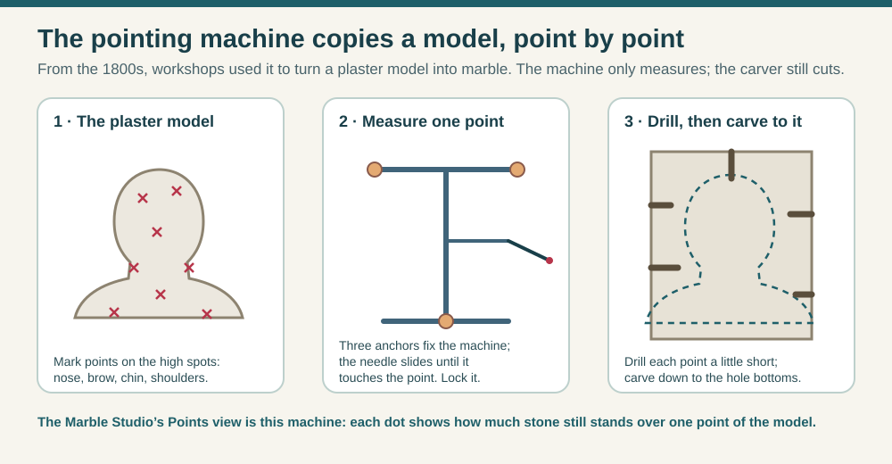
The machine measures and the carver cuts. In the Marble Studio, Points shows the same dots: red means lots of stone still stands over that point, green means you've reached it, purple means you cut too deep. Original ClassroomOS diagram.
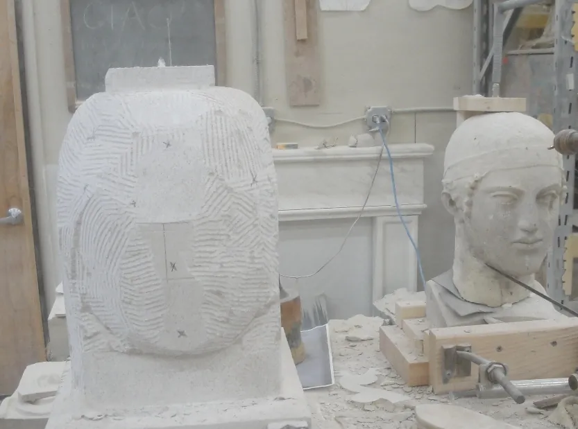
Pointing in a carving studio today: the plaster original on the right, the limestone copy on the left with its measured points marked. Notice the claw-chisel grooves. Photo: Stephanie and Kevin W Fehlenberg, CC BY-SA 3.0, source.
Michelangelo worked without one. Giorgio Vasari, who knew him, wrote in 1568 that he carved as if a wax model were lying in a tub of water and the water were slowly drained away: the highest points appear first, then the rest rises into view. The unfinished Atlas Slave at the top of this lesson shows that method. Michelangelo's half-finished stone, called non finito, later became a style of its own.
The idea
What makes a likeness?
People recognise things fast, and from very little: the outline of an owl, the ears of a rabbit, the way a person stands. A likeness works when the big things are right. Details can't rescue a wrong silhouette.
1 · Silhouette
The outline says what it is
Fill the shape in black. If a classmate can still name it, the likeness is working. Check it from the front, side and back.
2 · Proportion
Measure, don't guess
Compare parts with each other: a cat's head is about a quarter of its sitting height; a person's eyes sit halfway down the head.
3 · Pose
How it stands or sits
Weight on one leg (contrapposto), a curled tail, a tilted head. The pose often matters more than the face.
4 · The telling feature
Push what makes it that
An owl's dish-shaped face. A rabbit's ears. Caricaturists and toy designers exaggerate the feature you'd recognise first.
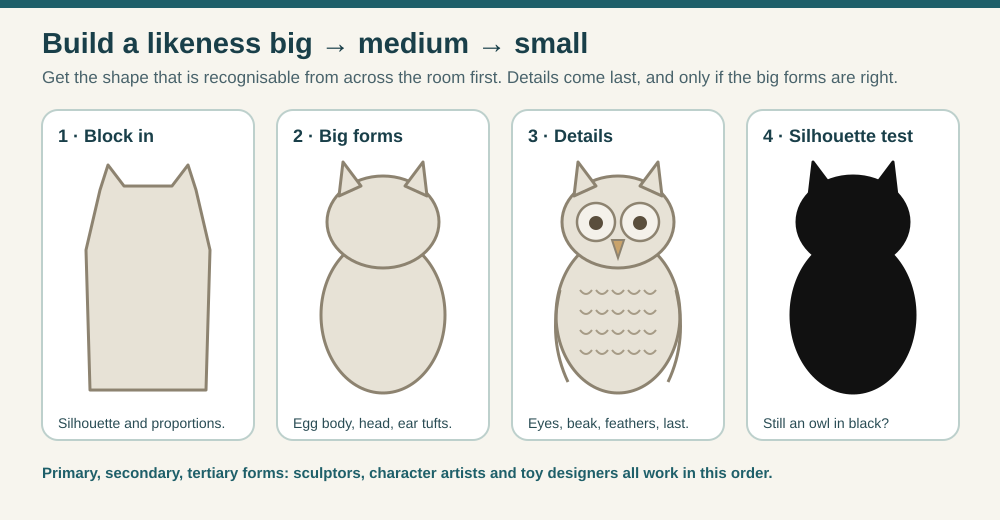
Work in that order: silhouette and proportion first, the big masses next, details last. The autopilot follows it too: point chisel, claw, flat, rasp. Original ClassroomOS diagram.
A likeness doesn't have to be realistic. Ancient sculptors chose how close to stay to life, from a Roman portrait that records every wrinkle (verism) to an Egyptian cat simplified into a few smooth planes. Both are instantly recognisable.
Look closely
2,600 years of likenesses
Open each picture and ask the same three questions: What is it a likeness of? How realistic did the sculptor choose to be? What tool marks can you still find?
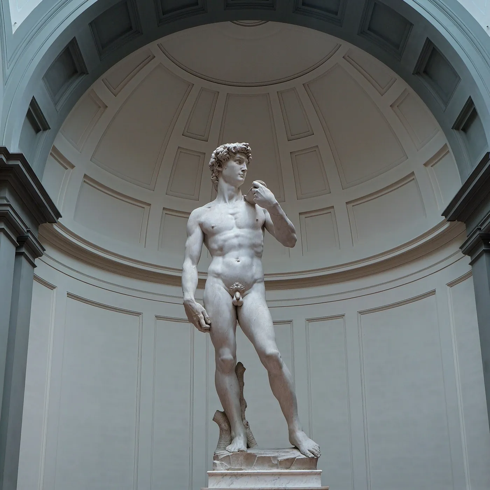
David · Michelangelo, 1501–1504Carved from a tall block another sculptor had started and abandoned. His weight rests on one leg (contrapposto), and the tree stump beside it is a support: marble ankles can't hold up a figure more than 4 metres tall on their own.Galleria dell'Accademia, Florence · Jörg Bittner Unna · CC BY 4.0 · source
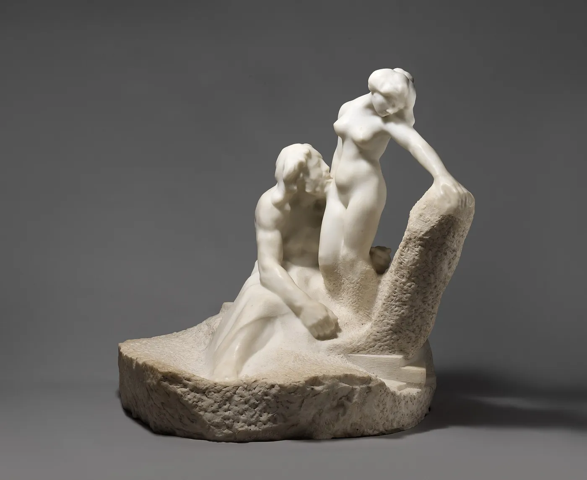
Pygmalion and Galatea · Auguste Rodin, carved c. 1908–9The myth of a sculptor whose statue comes to life. Rodin left the block rough on purpose so polished skin seems to grow out of raw stone. Compare the claw marks with the smooth figure.The Metropolitan Museum of Art · CC0 · source
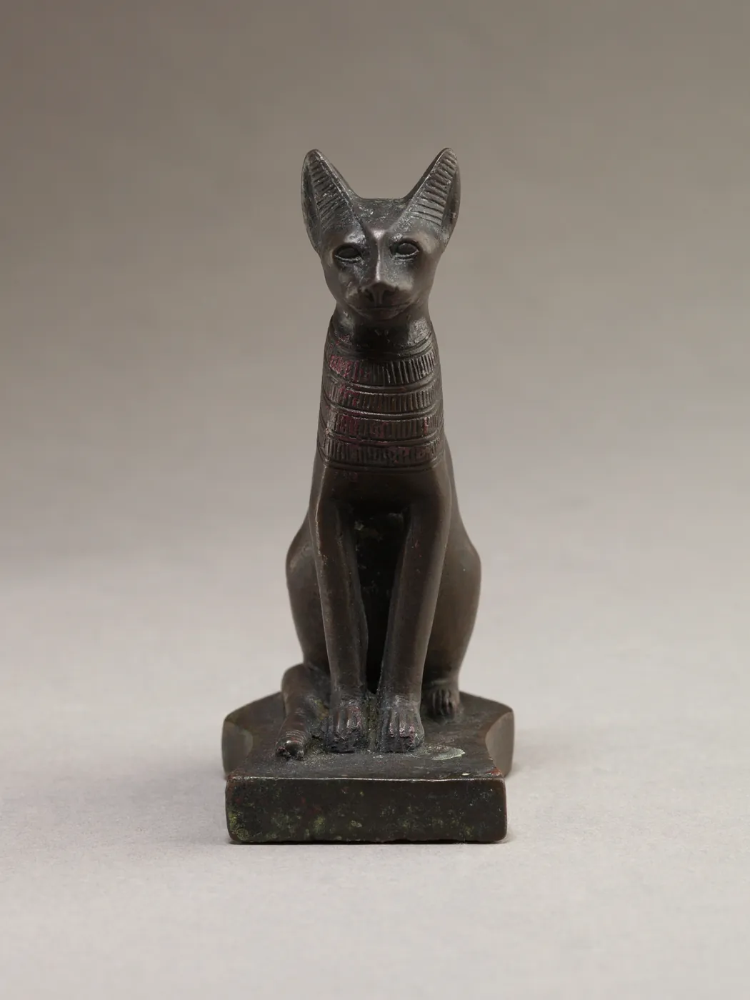
Seated cat · Egypt, 664–30 BCSimplified to a few smooth planes, yet nobody mistakes it for anything but a cat. The silhouette does the work: upright chest, tall ears, front legs straight down.The Metropolitan Museum of Art · CC0 · source
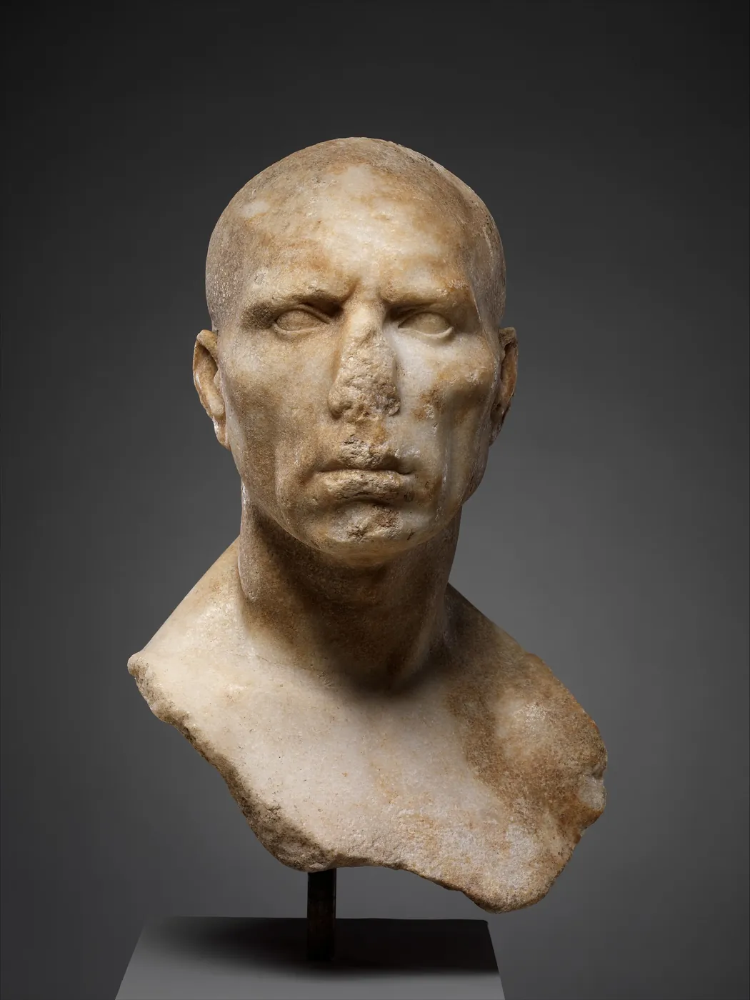
Portrait of a man · Rome, mid-1st century ADA likeness of one real person, wrinkles and all. Roman patrons wanted to look experienced and serious, so sculptors recorded age instead of hiding it.The Metropolitan Museum of Art · CC0 · source
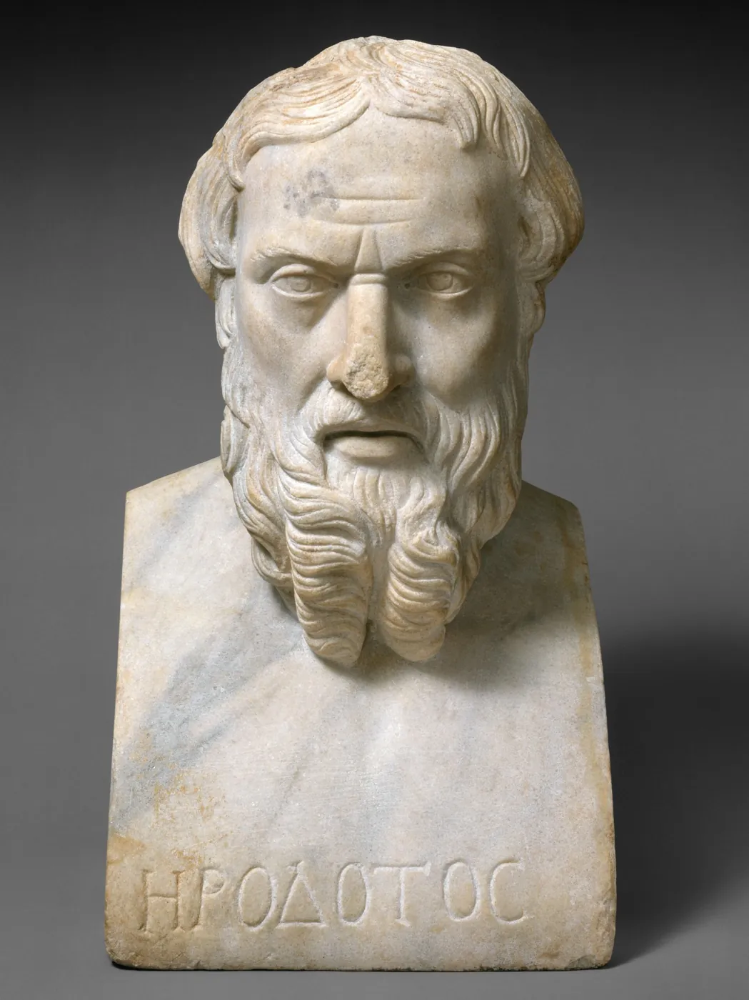
Herodotos · Roman copy, 2nd century ADMade centuries after the historian died, so nobody carving it had seen him. It's a likeness of an idea: the wise Greek writer. The name is carved on so viewers would know.The Metropolitan Museum of Art · CC0 · source
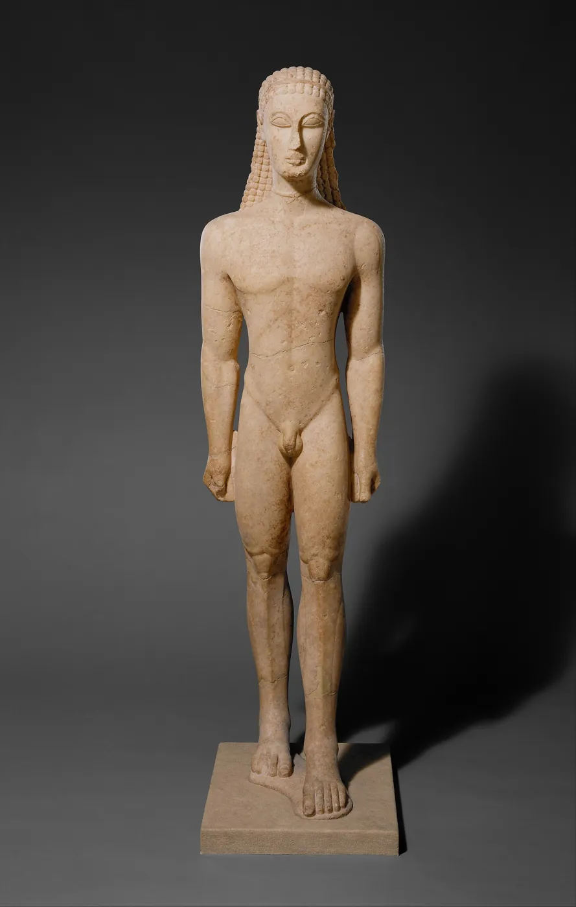
Kouros (youth) · Attica, Greece, c. 590–580 BCYou can still see the rectangular block in him: flat front, flat sides, arms tight to the body so they won't break off. Compare him with David, carved 2,000 years later.The Metropolitan Museum of Art · CC0 · source
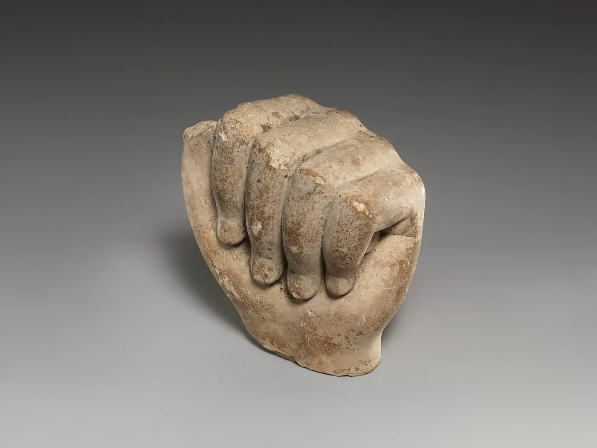
Sculptor's model of a fist · Egypt, 400–30 BCCarved parts like this may have been models for apprentices to study, or offerings. Either way, practising one part before the whole figure is still good advice.The Metropolitan Museum of Art · CC0 · source
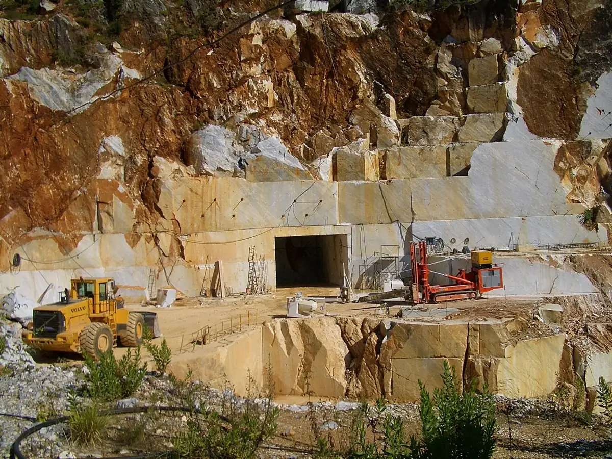
Marble quarry · Carrara, ItalyMichelangelo chose his blocks here himself, looking for cracks and veins that could ruin a statue. The same mountains are still quarried today.Vmenkov · CC BY-SA 3.0 · source
How we got here
From the block to the robot arm
Greek sculptors carve standing youths (kouroi) that keep the flat faces of the rectangular block, arms close to the body so nothing thin can snap off.
Egyptian workshops make simplified animal likenesses, and carved parts such as a fist that may have served as models for apprentices.
Roman portrait busts record individual people, wrinkles and all, so that a family could remember exactly who someone was.
Michelangelo spends three years carving David from a tall, damaged block that other sculptors had given up on.
Michelangelo works on the Prisoners for Pope Julius II's tomb and leaves them unfinished, figures half out of the stone.
Giorgio Vasari describes Michelangelo carving as though a wax model in water were being slowly revealed, the highest points first.
Workshops such as Antonio Canova's copy full-size plaster models into marble by measuring hundreds of points with a pointing machine.
Rodin's workshop carves Pygmalion and Galatea, leaving the block rough on purpose so the polished figure seems to emerge from it.
In Carrara, robot arms and CNC mills rough out statues from 3D models. Human carvers still do the final surface.
From marble to your printer
Plan a likeness you can print
The same habits that guide a marble carver guide a 3D-printed likeness. A printer adds instead of removing, but it has the same weakness: thin, unsupported parts fail.
Gather two viewsFind or draw your subject from the front and from the side, at the same size. That's your reference sheet, the way the Marble Studio's “Draw my own” works.
Block it inIn Workbench or your CAD app, make the silhouette from a few big shapes before any detail. Test the silhouette now.
Give it a baseA flat bottom stands on the print bed and keeps the likeness upright, like the plinth under every maquette.
Leave a strutEars, tails and arms snap in marble and in plastic. Keep them thick (2 mm or more), tuck them against the body, or add a support. Carvers call it a puntello.
Mind the overhangsUndersides steeper than about 45° need supports. Chins, beaks and bellies are the usual ones; tilt the model or plan supports in the slicer.
Add the other traitsA hinged lid, a print-in-place joint, a pen hole or a hook turns the likeness into something that moves or does a job.
Already designed something? Load its STL into the Marble Studio as your maquette and watch the autopilot carve it. If it carves cleanly, with nothing breaking off, it's a good sign it will print well too.
Your Trio plan
Critique
Test your likeness before you call it done
Three-second test. Show a classmate the silhouette, front and side. Can they name it in three seconds without a hint?
Walk-around test. Turn it a quarter turn at a time. Is it still recognisable from every side, or only from the front?
Raking-light test. Light it from one side, low down. Raking light shows every bump and flat spot that front light hides.
Proportion test. Measure one relationship on your reference and on your model: head to body, ear to head, beak to face.
Survival test. Nothing broke off in the studio, and no part of your print design is thinner than 2 mm or hanging in mid-air.
Exit prompt: “My sculpture is a likeness of ___. People recognise it by its ___. The one change that would make it more like ___ is ___.”
Words carvers use
Vocabulary
Likeness
Something made to be recognised as a particular person, animal or thing.
Subtractive sculpture
Making a form by removing material from a solid block. 3D printing is additive.
Maquette
A small model made first to plan a larger work.
Pointing machine
A frame with a sliding needle that copies points from a model onto a block.
Point, claw and flat chisel
Rough out, model the form, define the planes: in that order.
Non finito
Italian for “unfinished”: stone left rough so the figure seems to emerge from it.
Puntello
A strut of stone left to support a thin part while carving.
Silhouette
The solid outline of a form. A good likeness is recognisable from it alone.
Raking light
Light that skims across a surface at a low angle, so every bump casts a shadow.
Contrapposto
A standing pose with the weight on one leg, so hips and shoulders tilt opposite ways.
Verism
A Roman portrait style that recorded age and wrinkles honestly.


.jpg){kind=link}
_MET_DT263.jpg){kind=link}